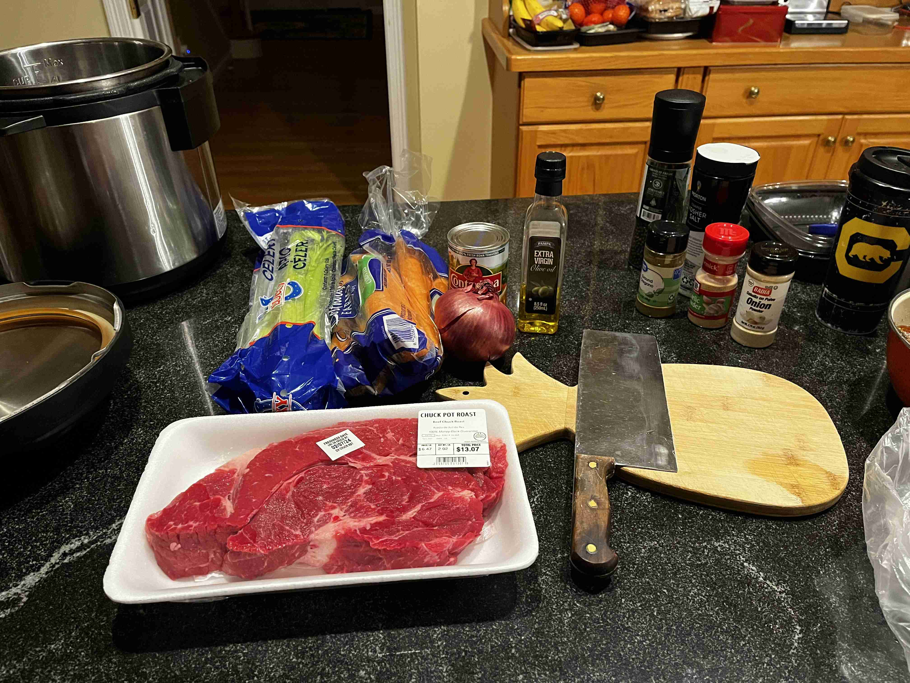
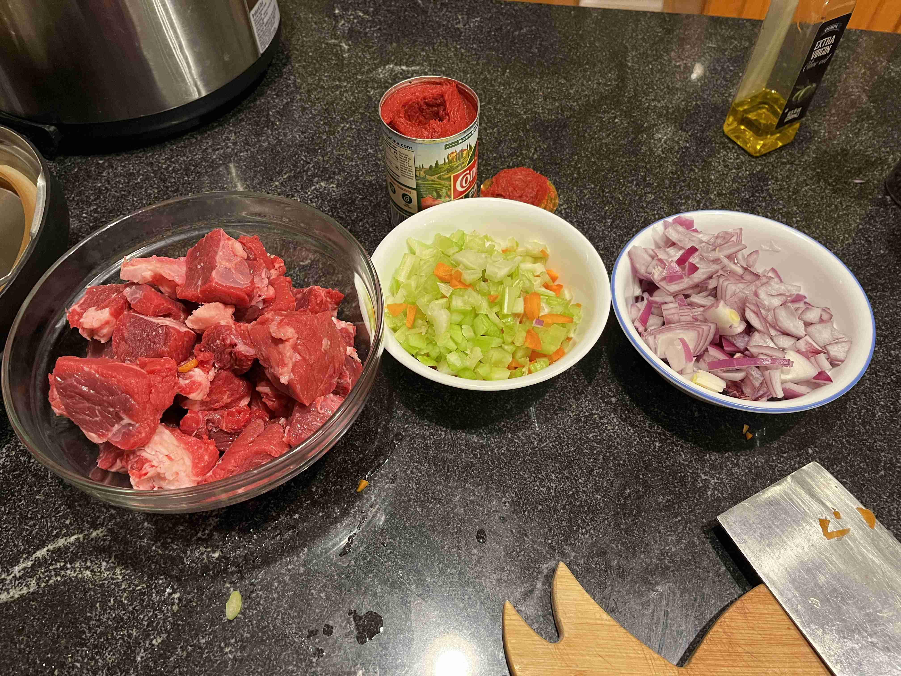
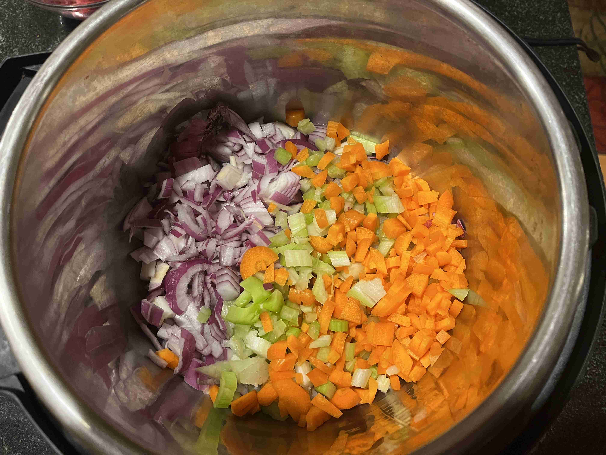
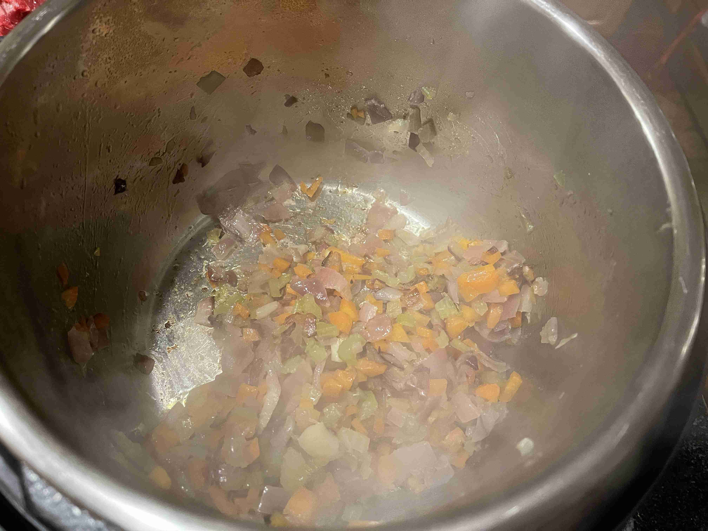
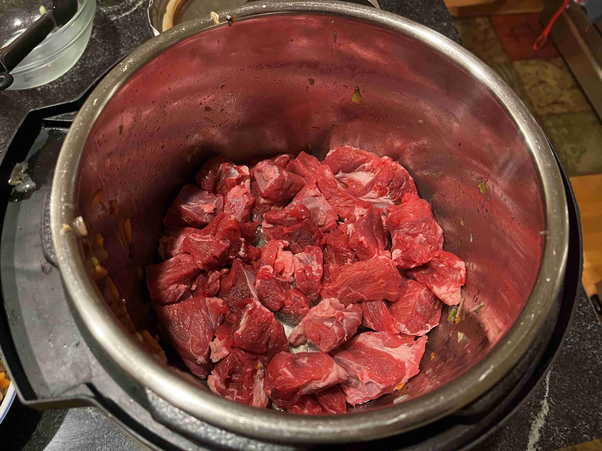
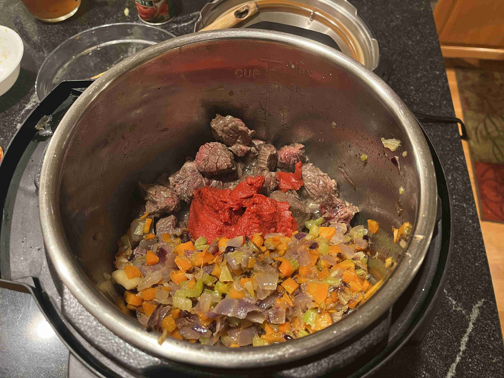
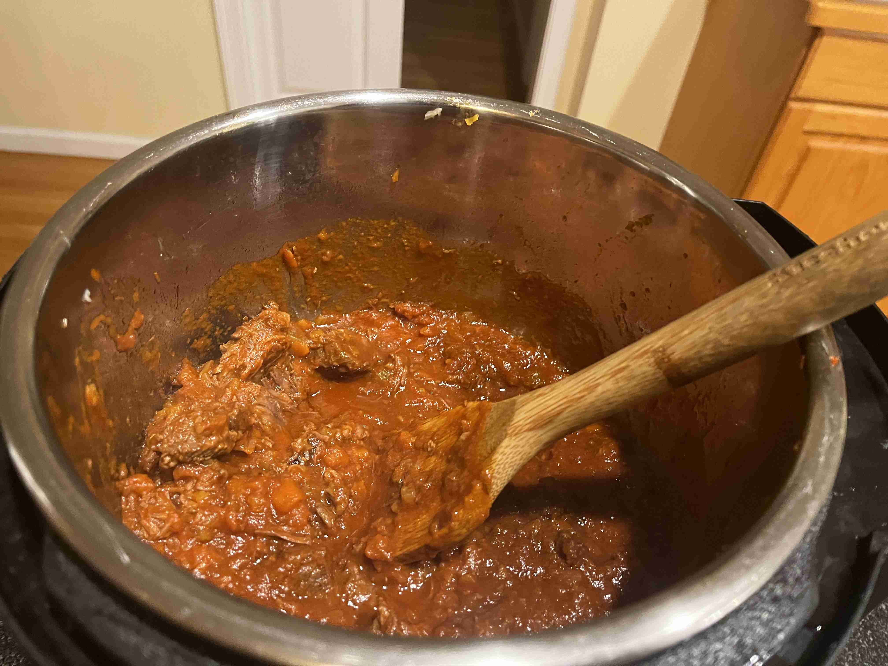

Ragu Alla Bolognese (Italy)
-
 6 servings
6 servings
-
 1.5
hours
1.5
hours
-
 Miles Gordon (TikTok)
Miles Gordon (TikTok)
-
 Meat
Meat
-
 Umami
Umami
Cooked on February 3, 2024.
My twentieth recipe! Ragu Alla Bolognese is a classic Italian beef meat sauce that is perfect for pasta, lasagna, or even on its own. It is a rich, hearty, and flavorful sauce that is perfect for a cozy night in.
Rating 7/10, the beef was extremely tender and was fall-apart delicious. The sauce was rich and flavorful, although I think some more seasoning would be nice next time to boost the overwhelming tomato-y flavor.
Special equipment: Instant pot
Cooking
1large purple onion (minced)1carrot (minced)2 stalkscelery (minced)1 tspgarlic powder1/2 cupextra virgin olive oil2 lbschuck roast (sliced into 1.5in cubes)1 tbspgarlic powder0.5 tbsponion powder0.25 tbsporegano3/4 cuptomato paste1.25 cupbeef broth0.5 cupred wine- salt and pepper


To make a soffrito, add 1/2 cup of the EVOO into an Instant Pot on saute mode. Add the onion, carrot, celery, and 1/2 tbsp garlic powder. Cook for 15 minutes fully covered in olive oil until the vegetables are essentially caramelized. Take out and set aside.


Sear the beef until browned on all sides.

Add the tomato paste, garlic powder, onion powder, oregano, broth, red wine, over the mix. Add the soffrito back in.

Pressure cook for 35 minutes. Let the pressure release naturally.
Break apart the beef with a wooden spoon. Season with salt and pepper. Serve over pasta or in lasagna. Enjoy!
